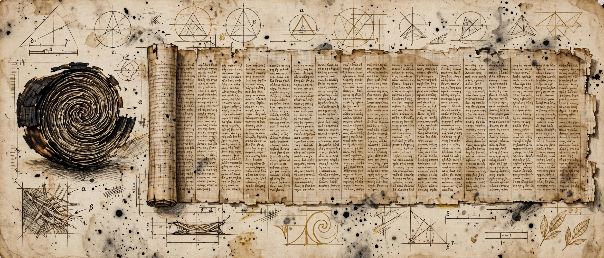

WEEK 08 · NOVEMBER 9, 2026
Read without opening

FIG. 1 · THE ROLL AND THE SHEET: SPIRAL CROSS-SECTION, THEN COLUMNS · AN ARTIST'S READING, NOT A PHOTOGRAPH AND NOT A TRANSCRIPTION
Herculaneum kept a cruel bargain. When Vesuvius erupted in AD 79, the heat carbonized the library of the Villa of the Papyri instead of burning it away. The scrolls survived. They survived as charcoal: open one and it comes apart in your hands. For centuries the choice was read it and lose it, or keep it and never know. The papyrus catalogued as PHerc. 1667 took the first option three times. Attempts to open it by hand, in the nineteenth century and again in 1969 and the 1980s, destroyed its outer layers and left a compact inner core, about 8 centimetres tall, of a roll once 19 to 24 centimetres high.1
On June 25, 2026, at the National Library of Naples, the Vesuvius Challenge announced the other option. PHerc. 1667 had been virtually unwrapped and read from beginning to end, without ever being opened. It is the first Herculaneum papyrus read in full this way: roughly 1.4 metres of papyrus, the lower parts of some twenty-two columns of Greek, transcribed and reviewed by papyrologists. The preprint, by Angelotti and twenty-six co-authors, puts the standard plainly: complete unwrapping under explicit coverage and papyrological review criteria, for extended scholarly study, without physical opening.13
FIG. 2 · THE FOUR MOVES: HOW A SEALED ROLL BECOMES A READ SHEET, SCHEMATIC
The roll as it survives: a compact inner core about 8 cm tall. The outer layers are gone, taken by earlier attempts to open it by hand in the nineteenth century, in 1969 and in the 1980s.
Stages and figures from the announcement and the preprint; see sources 1 and 3. The drawing is a schematic, not scan data.
The reading has a human scene inside it. Federica Nicolardi, the papyrologist at the University of Naples Federico II who leads the papyrology team, first received data for part of this scroll during the holidays. Ten columns, extremely well readable. She called it her Christmas present. Later the full length arrived, and Giorgio Angelotti, the project and technical lead, told her: you know, this is it. There is nothing else. Nothing else meant the whole surviving roll, end to end, on a screen, with the object itself untouched in Naples.2
What the columns hold is a philosophical treatise on ethics. The evidence points to a Stoic work, dated by its language and themes to the second century BC: human nature, impulse, and the moral progress of human beings. Its final preserved column names Aristocreon, nephew and disciple of Chrysippus, the Stoic whose own books are almost entirely lost. The readings are fragmentary, with gaps where the surface is gone. Three passages, in the team's translation, show what fragmentary still means in practice.1
- Stay inside your own nature.
“...we will inquire into something, but we will not grasp it, if in some way we depart from ourselves and from our own nature...”
A text about not departing from yourself, recovered by a method whose first rule is to leave the object exactly as it is. The rhyme is in the material, not imposed on it. - Effort, then wisdom.
“Having... strained ourselves to the utmost through research and learning... possessing the same practical wisdom...”
Research and learning, strained to the utmost, ending in practical wisdom held in common. As a description of the project that recovered it (a global open competition, its winners recruited onto the team), it is almost too neat. It is also what the Greek says. - Goods, weighed against evils.
“...such being the goods for us, even from the opposite evils there will be neither anything good, let alone beautiful, nor anything bad, let alone ugly, nor happiness...”
The sentence arrives broken and still argues. Two thousand years of damage took the surface in places. It did not take the reasoning.
The same announcement carried its own check. In a second scroll, PHerc. Paris 4, a higher-resolution scan makes the ink directly visible in the three-dimensional data for the first time, and that ink, segmented in 3D and projected onto the unwrapped page, matches the text read in the 2023 Grand Prize one to one. A reading confirmed by better data, from inside the object, without opening that scroll either. In a third, PHerc. 139, the title and author attribution were recovered from the closed roll: Philodemus, On Gods, Book 8. A library card, read through the cover.13
None of it is locked up. The tomographic data, the reconstructed surfaces and the transcriptions are released under a Creative Commons licence, and the code is public. Anyone can check the work, or apply it to the scrolls that remain. That openness has a history: Brent Seales pioneered virtual unwrapping at the University of Kentucky (a charred scroll from En-Gedi, read the same way in 2015), then co-founded the Vesuvius Challenge in 2023 with Nat Friedman and Daniel Gross and handed the problem to the world. Most of the research team first arrived as contestants. They won prizes, then joined the team, then read a whole scroll.12
Inventory what now exists. One blackened core, 8 centimetres tall, still sealed. One surface, 1.4 metres long, that exists only as data. Twenty-two columns, lower parts only, in Greek, with gaps. One name, Aristocreon, in the last column. One title, in another scroll, naming a book of Philodemus. And a method, checked against itself, built to scale to the hundreds of rolls still waiting in Naples and in the unexcavated parts of the villa.
The library waited nineteen centuries for a way to be read that did not cost it the book. The wait is over for one scroll. The rest are still in the dark, intact, which is now the point: intact is no longer the same as unread.
SOURCES
- Vesuvius Challenge, "An entire Herculaneum scroll has been read for the first time," June 25, 2026: the complete reading of PHerc. 1667, the surviving core and the earlier opening attempts, the 1.4 metres and twenty-two columns, the Stoic treatise and Aristocreon, the three translated passages quoted here, the Paris 4 ink confirmation, the Philodemus title in PHerc. 139, the ESRF scans, and the open data and code.
- Gizmodo, 2026 Science Fair, September 22, 2026: Seales and the road from manuscript digitization to virtual unwrapping, the En-Gedi scroll in 2015, the founding of the Challenge in 2023, Nicolardi's Christmas present and the full-length image, the team recruited from contestants, and the hundreds of scrolls remaining.
- Angelotti et al., "Complete virtual unwrapping and reading of a rolled Herculaneum papyrus," arXiv:2606.29085, submitted June 27, 2026: the coverage and papyrological-review criteria, the BM18 phase-contrast scans, the 3D ink segmentation in Paris 4 as independent validation, and the scalable framework claim.